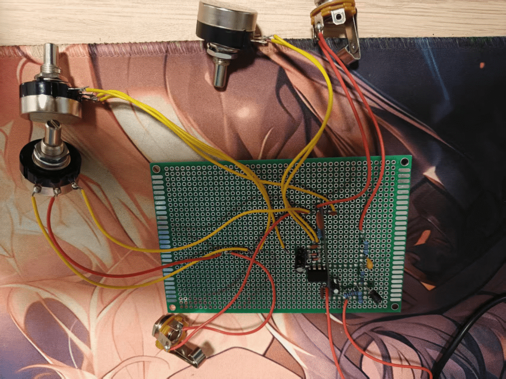

My Work
Course Projects
Guitar Effects Pedal
This project designed and built two dedicated guitar effects pedals: a distortion pedal using transistor-based soft clipping and a fuzz pedal employing diode based hard clipping. Each pedal features an independent circuit board with complete signal processing stages. Both circuits operate on 9V DC power and in corporate true bypass switching, providing distinct sonic characteristics through specialized analog signal processing.
| Parameter | Fuzz | Distortion |
|---|---|---|
| Clipping Threshold | ±0.7V | −1.2V/0.8V |
| THD @ 1kHz | 18.5% | 9.2% |
| Gain Range | 22-58dB | 20-52dB |

Special thanks to Dr Zhang,Q
Competitions & Awards
International Collegiate Programming Contest(ICPC)
- The 2024 ICPC Asia Kun'ming Regional Contest Silver Medal
- The 2024 ICPC Asia Sheng'yang Regional Contest Bronze Medal
- The 2025 ICPC Asia Xi'an Regional Contest Gold Medal
- The 2025 ICPC Asia Cheng'du Regional Contest Silver Medal